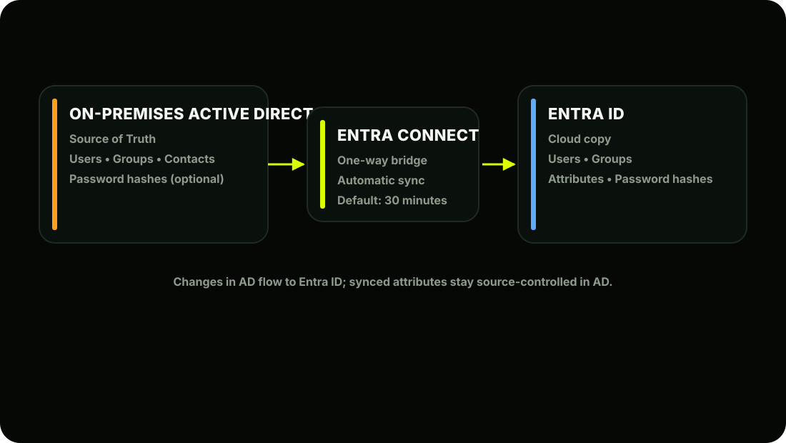
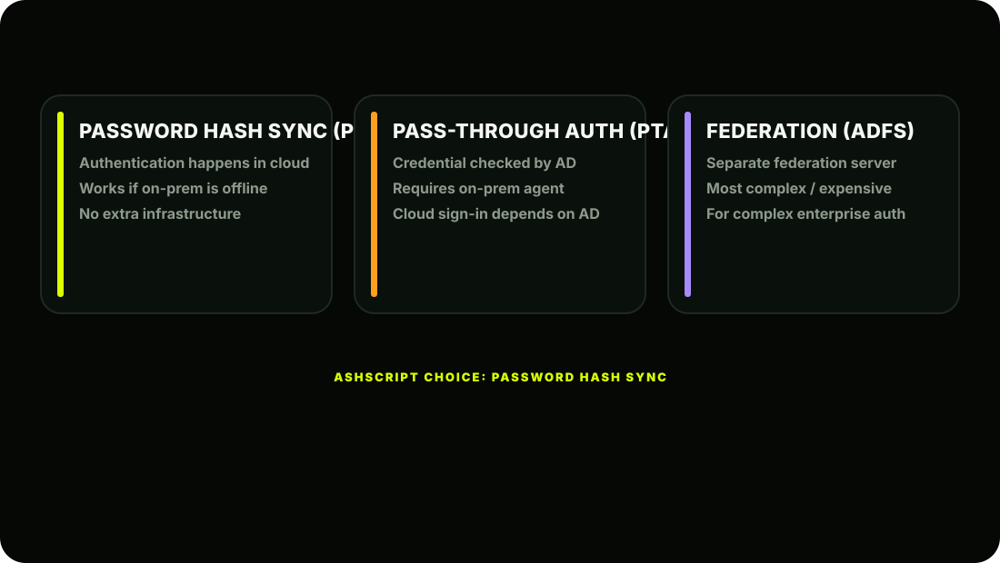
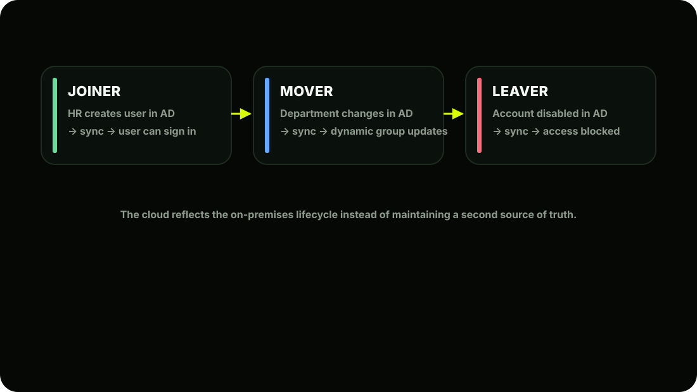

The Scene
Ashpak is staring at a CSV file Riya sent him. It has 1,000 rows; every AshScript employee, their department, job title, phone number, and manager. His first instinct is to write a PowerShell script to bulk-create users in Entra ID. He's halfway through writing it when his phone buzzes. It's a message from Priya:
"Why are you recreating users that already exist in Active Directory? Just sync them. That's what Entra Connect is for."
Ashpak stops typing. She's absolutely right. AshScript already has a perfectly maintained on-premises Active Directory with all 1,000 users, their attributes, group memberships, and password hashes. Why build from scratch when you can bridge what already exists? He closes the script and opens the Entra Connect documentation instead.
What is Entra Connect Sync?
Microsoft Entra Connect (formerly called Azure AD Connect) is a free tool you install on a Windows Server in your on-premises environment. Its job is simple but powerful:
It acts as a one-way bridge that continuously synchronises your on-premises Active Directory objects; users, groups, and contacts; up to Entra ID in the cloud. The golden rule of Entra Connect: On-premises AD remains the single source of truth. You make changes in AD; Entra Connect pushes them to the cloud. You never edit synced user attributes directly in Entra ID; those changes get overwritten at the next sync.

What Gets Synced: and What Doesn't
Not everything in AD syncs to Entra ID. Here's a clear breakdown:
- What Syncs by Default:
- What Does NOT Sync:
| AD Object/Attribute | Syncs to Entra ID? |
|---|---|
| User accounts | Yes |
| Display Name, UPN, Email | Yes |
| Department, Job Title, Manager | Yes |
| Phone numbers | Yes |
| Office location | Yes |
| Security Groups | Yes |
| Distribution Groups | Yes |
| Password hashes (optional) | If PHS enabled |
| Group memberships | Yes |
| Disabled accounts | Yes (synced as disabled) |
| AD Object/Attribute | Reason |
|---|---|
| Group Policy Objects (GPOs) | Cloud uses Intune profiles instead |
| Computer accounts (by default) | Handled separately via Hybrid Join |
| Passwords in plaintext | Only hashes sync (security by design) |
| Custom AD attributes (by default) | Need manual mapping configuration |
| Organisational Units (OUs) | Structure doesn't transfer; use groups instead |
Three Authentication Methods: Critical Decision
When setting up Entra Connect, Ashpak must choose how users authenticate. This is one of the most important architectural decisions in the entire migration.

| Method | How it works |
|---|---|
| 1. Password Hash Sync (PHS) | AD password hashes are synced to Entra ID. Authentication happens IN THE CLOUD. Works even if on-prem servers go down. User signs in → Entra ID checks hash → Access granted. |
| 2. Pass-Through Authentication (PTA) | Password hashes NOT stored in cloud. When user signs in, Entra ID passes the credential to on-prem AD to verify. Requires on-prem agent running. If on-prem goes down → users can't sign in to cloud. |
| 3. Federation (ADFS) | A separate federation server (like ADFS) handles all auth. Most complex. Most expensive. Used by large enterprises with complex auth requirements. Generally being phased out in favour of PHS + PTA. |
Ashpak's Choice: Password Hash Sync (PHS)
For AshScript, PHS is the right choice because: Simplest to set up and maintain Works even if on-prem servers go offline Enables leaked credential detection; Microsoft checks synced hashes against known breached password databases and alerts you Recommended by Microsoft for most organisations No additional infrastructure needed
- Security note: Password hashes sync; not the actual passwords. The hash is a one-way
- cryptographic representation. Microsoft cannot reverse it to get the real password. This is safe.
Prerequisites Before Installing Entra Connect
Before touching the installer, Ashpak checks off the requirements:
Download Entra Connect
Download from:
Ashpak copies this to his dedicated sync server: ASHPAK-SYNC01
Launch the Installer
Double-click AzureADConnect.msi on the sync server. The wizard opens. Two setup options appear:
Ashpak selects Express Settings; AshScript has a single AD forest.
Connect to Entra ID
The wizard asks for Entra ID credentials:
Connect to Active Directory
Configure UPN Suffix (If Needed)
If on-prem UPNs use .local (non-routable), Ashpak must fix this:
Bulk fix via PowerShell (Ashpak writes this):
powershell# Change all users' UPN suffix from .local to .com
Get-ADUser -Filter * -SearchBase "DC=ashpak,DC=local" |
ForEach-Object { $newUPN = $_.UserPrincipalName -replace "ashpak.local","ashscript.com" Set-ADUser $_ -UserPrincipalName $newUPN Write-Host "Updated: $newUPN"
}Review and Configure Sync
Express settings shows a summary screen:
Ashpak clicks Install.
First Sync Completes
Notice the Source column; synced users show Windows Server AD . Cloud-only accounts (like the break-glass admins) show Microsoft Entra ID . This distinction matters for troubleshooting
; if you try to edit a synced user attribute in Entra ID, it will be greyed out and show: "This attribute is managed by your on-premises Active Directory."
Understanding the Sync Cycle
Once Entra Connect is running, it syncs automatically:
Forcing a Manual Sync When Ashpak creates a new user in AD and doesn't want to wait 30 minutes:
powershell# Run on the Entra Connect server (ASHPAK-SYNC01)
# Trigger a delta sync (only changed objects)
Start-ADSyncSyncCycle -PolicyType Delta
# Trigger a full sync (all objects; use sparingly)
Start-ADSyncSyncCycle -PolicyType InitialDelta sync is fast (seconds to minutes); only processes changes since last sync. Use this regularly. Full/Initial sync re-reads everything; use only when troubleshooting or after major config changes.
Monitoring Sync Health
In the Portal:
Path:
What to look for:
On the Server; Sync Log:
powershell# Check sync errors on the Entra Connect server
Get-ADSyncRunStepResult | Select-Object -Last 10
# View the full sync log
# Located at:
# C:\ProgramData\AADConnect\trace-YYYYMMDD.logWhat Happens When Things Change in AD
Here's the day-to-day reality of how Entra Connect keeps things in sync for AshScript:
This automated lifecycle management is one of the biggest wins of Entra Connect. HR manages joiners/movers/leavers in AD as they always have; the cloud automatically reflects the changes.

AshScript's Current State After Lesson 2.2
Key Concepts to Lock In
| Concept | Remember This |
|---|---|
| Entra Connect | Free tool; syncs on-prem AD to Entra ID |
| Source of truth | Always on-prem AD; never edit synced users in cloud |
| Password Hash Sync | Recommended method; works offline, enables breach detection |
| Sync cycle | Every 30 minutes by default |
| Delta sync | Fast; only changed objects |
| Full sync | Slow; everything; use sparingly |
| Force sync | Start-ADSyncSyncCycle -PolicyType Delta |
| UPN suffix | Must be routable ( .com not .local ) before sync |
| Synced user source | Shows as Windows Server AD in Entra ID |
| Lifecycle management | Disable in AD → auto-blocked in cloud within 30 min |